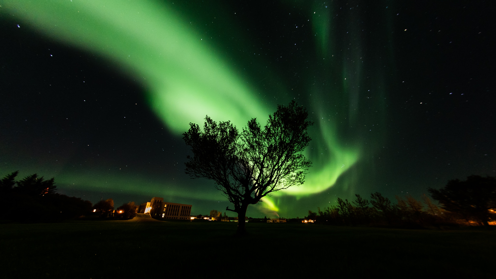

[countable, uncountable] the form of the outer edges or surfaces of something; an example of something that has a particular form
Example: a rectangular/spherical/cylindrical shape geometric shapes fantastic creatures that can change shape and be either visible or invisible You can recognize the fish by the shape of their fins. They have completely different body shapes. This old T-shirt has completely lost its shape. in shape The island was originally circular in shape. Several rooms are irregular in shape. Candles come in all shapes and sizes. Glass is blown or moulded into many shapes. in the shape of something The pool was in the shape of a heart. (figurative) The government provides money in the shape of (= consisting of) grants and student loans.